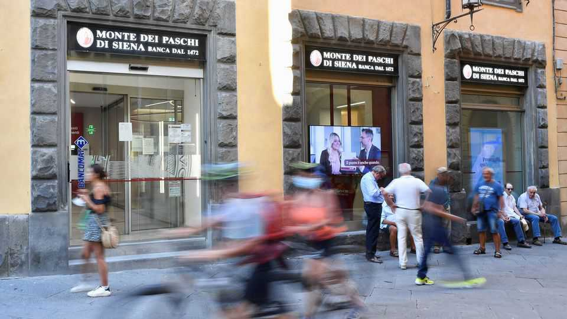

A bidding war erupts for the world’s oldest bank
Monte dei Paschi di Siena is suddenly all the rage
June 11th 2026

FOR MONTHS Italian finance has been gripped by the €16bn ($18bn) takeover by Monte dei Paschi di Siena (MPS), the world’s oldest surviving lender, of Mediobanca, an investment bank which also owns a 13% stake in Generali, a giant insurer. Completed last September, it was the biggest European banking merger in years. It involved the abrupt sacking of MPS’s boss by the board in April and his rapid reinstatement by shareholders.
If that was not enough drama, on June 7th Banco BPM, Italy’s fourth-largest lender, proposed a tie-up with MPS that would create a heavyweight worth some €50bn. The next day Carlo Messina, boss of Intesa Sanpaolo, Italy’s biggest domestic lender, dismissed BPM’s offer as a “love letter” and launched a rival and, he claimed, less frivolous €31bn bid for MPS. The result would build a behemoth with market value of €130bn or so.
Intesa is offering MPS’s owners 16 newly issued shares of its own for every ten in MPS, plus €1 per share on top of that. That represents a premium of 12.5% on MPS’s closing share price on June 5th. Intesa has called a shareholders’ meeting for September 10th to approve the necessary issuance of shares. If both banks’ shareholders go for it, the deal would create the euro zone’s second-biggest lender by market value, after Santander of Spain.
To ease trustbusters’ worries, Intesa has struck a deal with Unipol, an insurer that has the biggest holding in another Italian lender, BPER, to divvy up MPS’s retail business. Intesa would keep 625 of MPS’s 1,260 branches. The brand and many of MPS’s central operations would go to BPER, creating Italy’s third-biggest banking group.
That might satisfy Italy’s trustbusters. Giorgia Meloni’s conservative—and nationalist—government would certainly prefer Intesa’s bid to Banco BPM’s. Crédit Agricole, a French bank, holds a stake of 20% in BPM. Politicians in Rome sometimes cheer on the equally drama-filled pursuit of Germany’s Commerzbank by UniCredit, another big Italian lender. They may prove less keen to let foreigners grab a bigger slice of Italian finance. ■
For more expert analysis of the biggest stories in economics, finance and markets, sign up to Money Talks, our weekly subscriber-only newsletter.